CS184/284A Fall 2026 Homework 2 Write-Up
Link to webpage: https://cal-cs184-student.github.io/hw2-geometrics-writeup/
Link to GitHub repository: https://github.com/cal-cs184-student/hw2-geometrics
Overview
In this assignment, I implemented algorithms for evaluating Bezier curves and surfaces, calculating area-weighted vertex normals, modifying triangle mesh connectivity with edge flips and splits, and increasing mesh resolution using Loop subdivision. The first section demonstrated how repeated linear interpolation can construct smooth curves and surfaces. The second section showed how the half-edge data structure supports efficient local mesh operations.
The most important lesson I learned was that geometric algorithms depend on both vertex positions and mesh connectivity. Edge flips and splits required carefully updating every affected half-edge, vertex, edge, and face pointer. Loop subdivision also showed that even geometrically symmetric objects can subdivide asymmetrically when their triangle connectivity is asymmetric. Precomputing positions before changing the topology and distinguishing old and new mesh elements helped prevent iteration-order and connectivity errors.
Section I: Bezier Curves and Surfaces
Part 1: Bezier curves with 1D de Casteljau subdivision
Algorithm and Implementation
De Casteljau's algorithm evaluates a point on a Bezier curve through repeated linear interpolation. For every pair of adjacent points \(P_i\) and \(P_{i+1}\), the corresponding point in the next level is calculated using
\[ P_i' = (1-t)P_i + tP_{i+1}. \]
The parameter \(t\) ranges from 0 to 1 and determines the location of the interpolated point between \(P_i\) and \(P_{i+1}\). When \(t=0\), the result is \(P_i\), and when \(t=1\), the result is \(P_{i+1}\). Values between 0 and 1 produce a weighted average of the two points.
I implemented BezierCurve::evaluateStep by iterating
through every adjacent pair in the supplied vector of control points.
For each pair, I calculated
(1 - t) * points[i] + t * points[i + 1] and appended the
result to a new vector. Therefore, one call to
evaluateStep performs exactly one subdivision level:
an input containing \(n\) points produces an output containing
\(n-1\) points. Repeating this process eventually leaves one point,
which lies on the Bezier curve at the selected value of \(t\).
Custom Six-Point Bezier Curve
I created a custom .bzc file containing the following six
control points:
\[ (0.200,0.350),\; (0.300,0.600),\; (0.500,0.750),\; (0.700,0.450),\; (0.850,0.200),\; (1.000,0.900). \]
Six control points define a degree-five Bezier curve. Starting with these points, the successive subdivision levels contain \(6 \rightarrow 5 \rightarrow 4 \rightarrow 3 \rightarrow 2 \rightarrow 1\) points.
de Casteljau Evaluation Levels

|

|

|

|

|

|
Completed Bezier Curve

C key.
Modified Control Points and Parameter

Moving an original control point changed the shape of the entire curve because every later interpolation level depends on the original points. Changing \(t\) did not change the complete curve itself. Instead, it changed the interpolation weights and moved the intermediate points and final evaluated point along the curve.
Part 2: Bezier surfaces with separable 1D de Casteljau
Algorithm and Implementation
De Casteljau's algorithm extends from Bezier curves to Bezier surfaces by applying the one-dimensional curve algorithm in two directions. A Bezier surface is defined by a two-dimensional grid of 3D control points and two parameters, \(u\) and \(v\).
I first treated every row of the control-point grid as an independent Bezier curve. I evaluated each row at parameter \(u\), producing one intermediate 3D point for every row. I then treated those intermediate points as the control points of another Bezier curve and evaluated that curve at parameter \(v\). The final result is a single 3D point on the Bezier surface at parameters \((u,v)\).
I implemented this process using three functions.
BezierPatch::evaluateStep performs one level of linear
interpolation on a vector of 3D points using
\(P_i'=(1-t)P_i+tP_{i+1}\).
BezierPatch::evaluate1D repeatedly calls
evaluateStep until only one point remains.
Finally, BezierPatch::evaluate calls
evaluate1D on every row using \(u\), stores the resulting
points, and evaluates those points using \(v\).
Evaluated Bezier Surface

bez/teapot.bez with separable one-dimensional
de Casteljau subdivision.
Section II: Triangle Meshes and Half-Edge Data Structure
Part 3: Area-weighted vertex normals
Implementation
To calculate the area-weighted normal at a vertex, I traversed all
triangular faces incident to that vertex using the half-edge data
structure. Starting from the vertex's half-edge, I moved around its
one-ring neighborhood using
h = h->twin()->next() until I returned to the starting
half-edge.
For each non-boundary triangle, I obtained its three vertex positions \(p_0\), \(p_1\), and \(p_2\). I calculated its contribution using
\[ N_f = (p_1-p_0)\times(p_2-p_0). \]
The magnitude of this cross product is twice the area of the triangle, so summing these vectors automatically gives larger faces more influence over the resulting vertex normal. The constant factor of two does not affect the result because I normalize the accumulated vector after visiting all incident faces.
I used HalfedgeCIter because
Vertex::normal() is a constant member function and must not
modify the mesh. I also ignored virtual boundary faces so that they did
not contribute invalid triangle normals. Finally, I called
unit() on the accumulated vector to return a unit-length
area-weighted normal.
Flat and Phong Shading Comparison

dae/teapot.dae model with default flat
shading. Individual triangular faces are visible.
|

Q to enable Phong shading with area-weighted
vertex normals.
|
Flat shading assigns one normal to each triangle, making the boundaries between neighboring faces visible. Phong shading interpolates the area-weighted vertex normals across each triangle, producing a much smoother appearance without changing the geometry of the teapot.
Part 4: Edge flip
Implementation
An edge flip replaces the shared diagonal between two adjacent triangles. For triangles \((a,b,c)\) and \((c,b,d)\), flipping the shared edge \((b,c)\) replaces it with \((a,d)\), producing triangles \((a,d,c)\) and \((a,b,d)\). The operation changes the mesh connectivity but does not change any vertex positions.
I implemented HalfedgeMesh::flipEdge by first obtaining the
six half-edges, four vertices, five edges, and two faces in the local
two-triangle neighborhood. If either neighboring face was a boundary
face, I immediately returned the original edge because a boundary edge
does not have two ordinary adjacent triangles.
For an interior edge, I reused the existing mesh elements and changed
only their connectivity. After the flip, I arranged the first face's
half-edges into the cycle
\(a \rightarrow d \rightarrow c \rightarrow a\), and the second face's
half-edges into the cycle
\(d \rightarrow a \rightarrow b \rightarrow d\). I used
setNeighbors to assign every affected half-edge's
next, twin, vertex,
edge, and face pointers. I also assigned valid
half-edge pointers to all affected vertices, edges, and faces.
The implementation neither creates nor deletes mesh elements and only updates a fixed-size local neighborhood. Therefore, one edge flip uses constant \(O(1)\) time regardless of the size of the complete mesh.
Edge-Flip Results
|
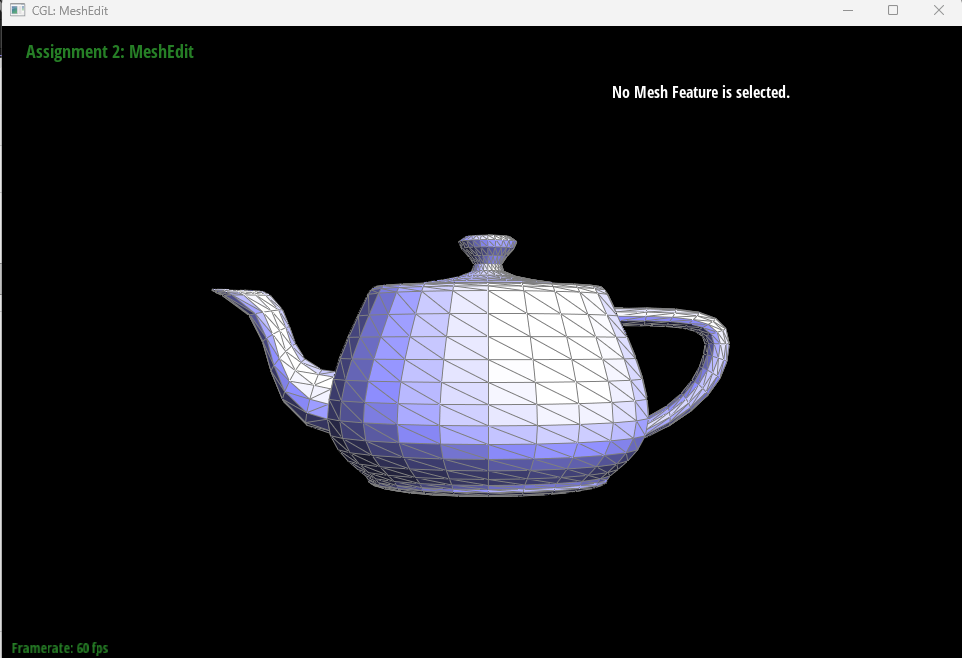 dae/teapot.dae wireframe before
performing edge flips.
|
|
Testing and Debugging
I initially thought that pressing F was not changing the
mesh. The actual problem was that I was clicking and dragging vertices,
which modified their positions, instead of selecting an edge. I enabled
wireframe mode with W, zoomed into the mesh, and used a
single click on the center of an edge before pressing F.
This made the change in the shared diagonal visible.
I tested the implementation by flipping several nearby interior edges
rather than testing only one edge. This helped verify that the
next, twin, vertex,
edge, and face pointers remained consistent
after repeated operations. The mesh did not develop holes or disconnected
triangles, and boundary-edge requests returned without modifying the
mesh.
Part 5: Edge split
Implementation
An edge split inserts a new vertex at the midpoint of an existing edge. When an interior edge is shared by two triangles, connecting the new midpoint vertex to the two opposite vertices divides the original two triangles into four smaller triangles.
I implemented HalfedgeMesh::splitEdge by first collecting
the local neighborhood around the selected edge: six existing
half-edges, four vertices, five edges, and two faces. I ignored boundary
edges for the required implementation because splitting boundary edges
requires separate handling of the virtual boundary face.
For an interior edge, I created one new vertex, three new edges, six new half-edges, and two new faces. I reused the original edge, its two half-edges, and its two adjacent faces. The new vertex position was set to the midpoint of the original edge using
\[ m = \frac{b+c}{2}. \]
I then organized the half-edges into four three-half-edge cycles, one
for each resulting triangle. Using setNeighbors, I assigned
every affected half-edge's next, twin,
vertex, edge, and face pointers.
I also assigned valid half-edge pointers to every affected vertex, edge,
and face. The new vertex's half-edge points along the original split
edge, which will also be useful during Loop subdivision.
The operation performs only a fixed number of allocations and pointer assignments in the local two-triangle neighborhood. Its running time is therefore constant \(O(1)\), independent of the total mesh size.
Edge-Split Results

|
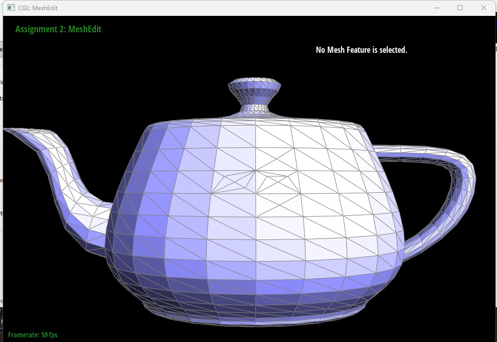 |
Combined Edge Splits and Edge Flips
|
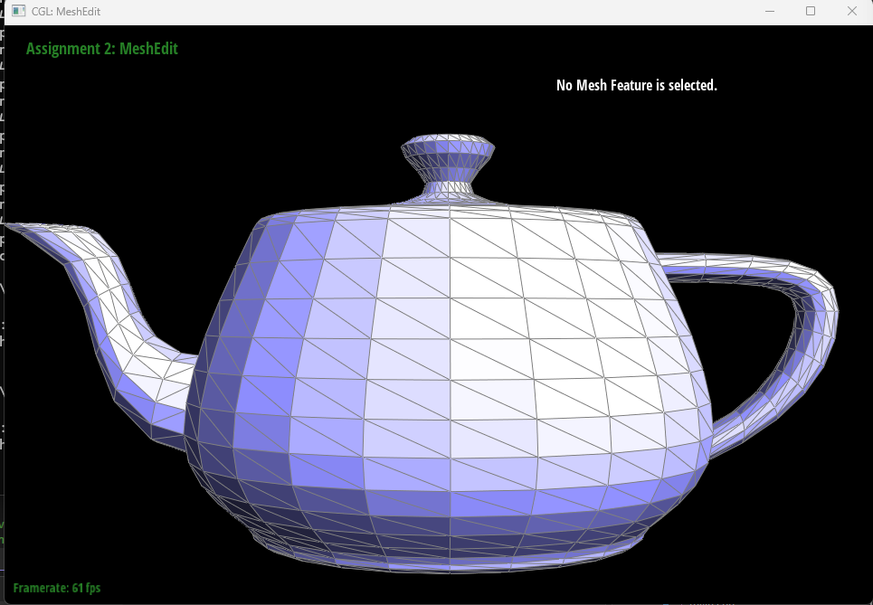 |
S and flipping selected edges with
F.
|
Testing and Debugging
The main challenge was ensuring that every pointer remained consistent after introducing the new mesh elements. I handled this by labeling all local elements before and after the operation, creating only the required new elements, and explicitly assigning every pointer rather than updating only the pointers that appeared to change.
I first tested several edge splits in wireframe mode and verified that
each pair of triangles became four triangles without creating holes.
I then alternated edge splits and edge flips in nearby regions. Repeated
operations completed without crashes or disconnected faces, providing
additional evidence that the next, twin,
vertex, edge, and face
relationships remained valid.
I did not implement the optional extra-credit support for splitting boundary edges. Requests to split a boundary edge return without modifying the mesh.
Part 6: Loop subdivision for mesh upsampling
Implementation
Loop subdivision increases the resolution of a triangular mesh while smoothing its surface. Each original triangle is subdivided into four smaller triangles, and the vertex positions are updated using weighted averages of the original mesh positions.
I implemented Loop subdivision in five stages. First, I stored iterators to all original vertices and edges so that elements created later would not accidentally be processed as original elements. I then computed and stored the new positions of all original vertices without immediately changing their current positions.
For an original vertex \(P\) with degree \(n\), I used
\[ P_{\text{new}} = (1-nu)P + u\sum P_{\text{neighbor}}, \]
where
\[ u = \begin{cases} \frac{3}{16}, & n=3,\\ \frac{3}{8n}, & n\ne3. \end{cases} \]
Next, I computed the future position of the new vertex associated with each original edge. For an edge with endpoints \(A\) and \(B\), and opposite triangle vertices \(C\) and \(D\), I used
\[ P_{\text{edge}} = \frac{3}{8}(A+B) + \frac{1}{8}(C+D). \]
After calculating all positions from the original mesh, I split every original edge using my Part 5 implementation. I marked each inserted midpoint as a new vertex. The two segments lying along an original edge were marked as old edges, while the edges connecting a midpoint to an opposite vertex were marked as new edges.
I then flipped every new edge connecting exactly one old vertex and one
new vertex using my Part 4 edge-flip implementation. This creates the
required four-to-one triangle subdivision pattern. Finally, after all
topology changes were complete, I copied each stored
newPosition into the vertex's displayed
position.
Computing all new positions before modifying the mesh was important. Updating positions immediately would cause later calculations to mix old and new data, making the result depend on iteration order. Saving the original edges in a separate vector was also important because otherwise the algorithm could repeatedly split edges that it had just created.
Repeated Subdivision of the Original Cube
|
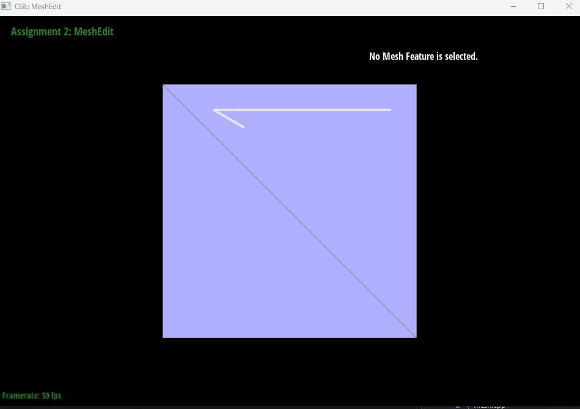 |
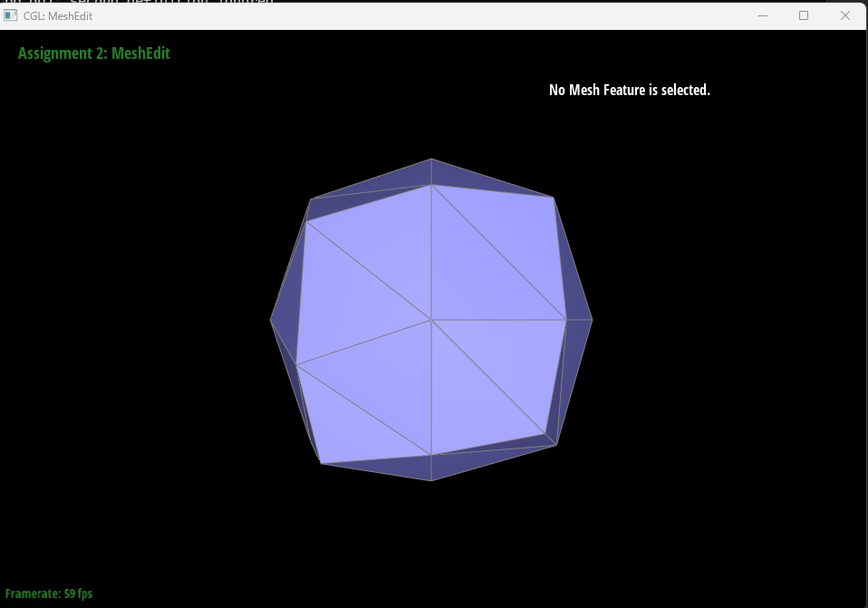 |
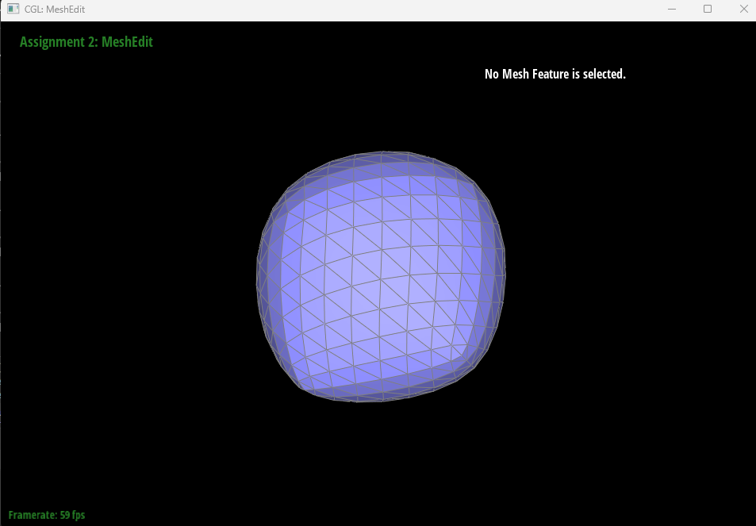
Each subdivision iteration increased the number of triangles and made the cube progressively smoother. The sharp edges and corners became rounded because Loop subdivision replaces every vertex position with a weighted average involving its neighboring vertices. The averaging also caused the mesh to shrink inward.
The repeatedly subdivided cube became slightly asymmetric. Although the cube's geometric shape is initially symmetric, every square face is represented by two triangles separated by one diagonal. The orientations of these diagonals affect vertex degree and connectivity, so some cube vertices receive different subdivision weights from other geometrically equivalent vertices.
Symmetric Cube Preprocessing
To make the cube's connectivity more symmetric, I reopened the original cube and split the diagonal on each of its six square faces. Each split inserted a vertex at the center of a face and changed that face from two triangles into four triangles arranged around the center. This gave each square face the same radial triangulation and reduced the influence of the original arbitrary diagonal orientations.
|
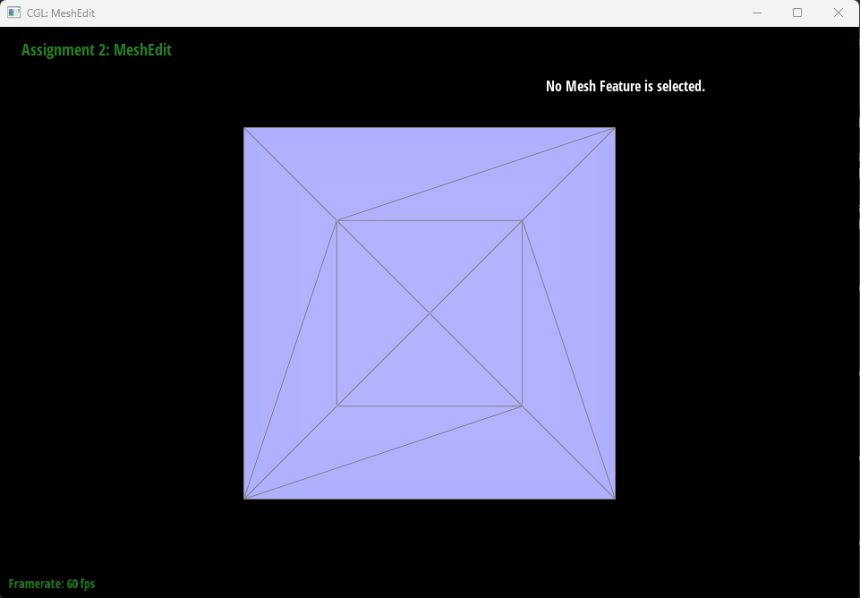 |
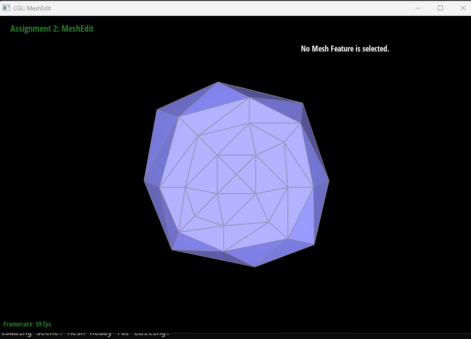 |

The preprocessed cube remained more symmetric after repeated subdivision. Splitting every face diagonal removed the unequal treatment caused by selecting only one diagonal direction on each face. Edge flips can also be used to redistribute local connectivity, but splitting the six face diagonals was sufficient to give this cube a consistent face-centered triangulation.
Reducing the Rounding of Sharp Features
I also tested whether adding supporting geometry before subdivision could reduce the rounding of a sharp corner. I selected one cube corner and split the three cube edges incident to that corner. This introduced new neighboring vertices closer to the corner before applying Loop subdivision.
|
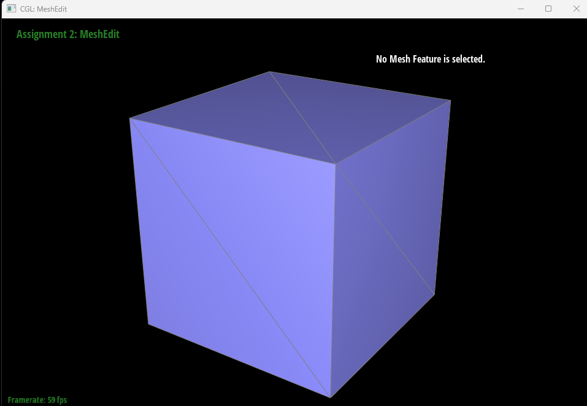 |
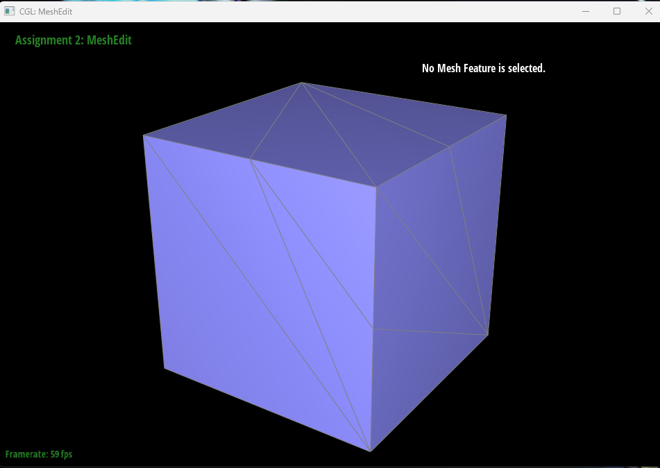 |
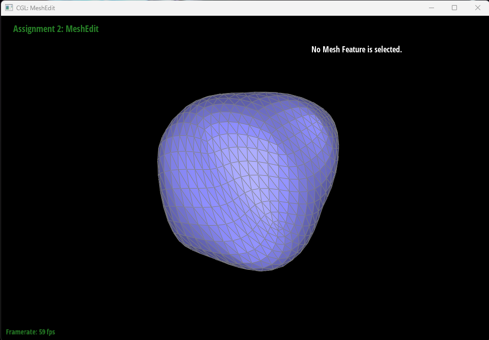
Compared with the unmodified cube after three subdivision iterations, the pre-split corner remained more pronounced and moved inward less. The additional vertices were closer to the original corner, so their weighted influence constrained the smoothing to a smaller region. This demonstrates how supporting edges can reduce, although not completely eliminate, the rounding of sharp features.
Testing and Debugging
Part 6 depended directly on the correctness of my edge-flip and edge-split implementations. I first tested one subdivision iteration and checked that each original triangle became four triangles without holes. I then applied several iterations to verify that repeated splits and flips preserved valid mesh connectivity.
A useful implementation safeguard was storing all original edge
iterators before beginning the split loop. Iterating directly over the
growing edge collection could also visit newly created edges and continue
splitting indefinitely. I also used the isNew flags to
distinguish original edge segments from newly created connecting edges,
ensuring that only the required old-new edges were flipped.